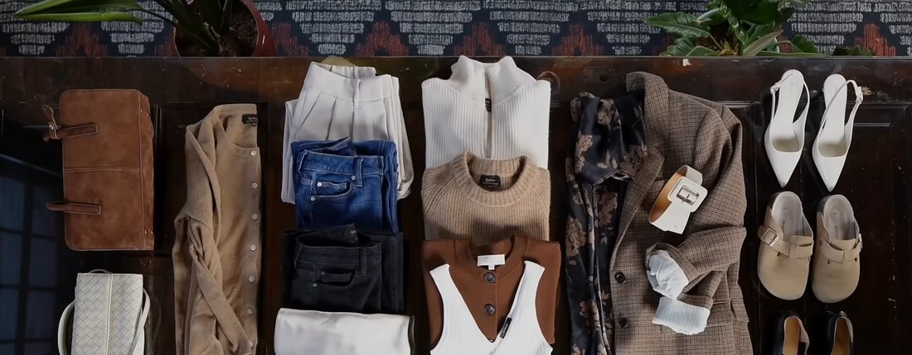
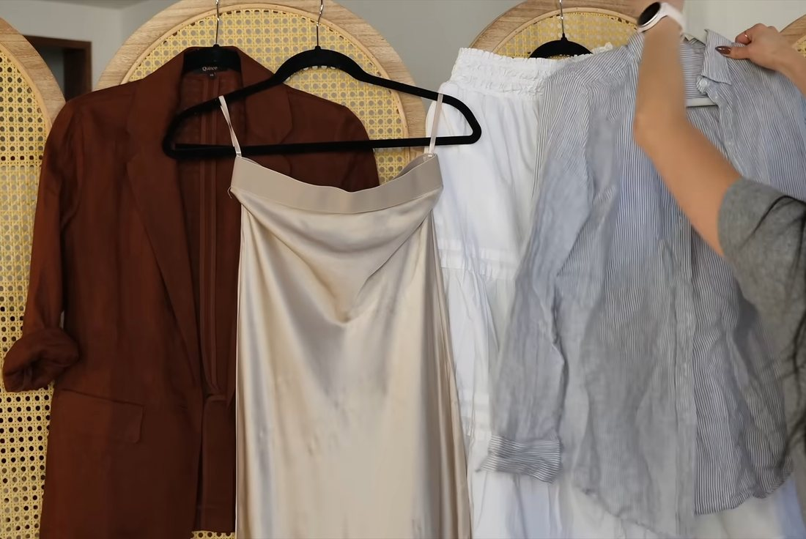
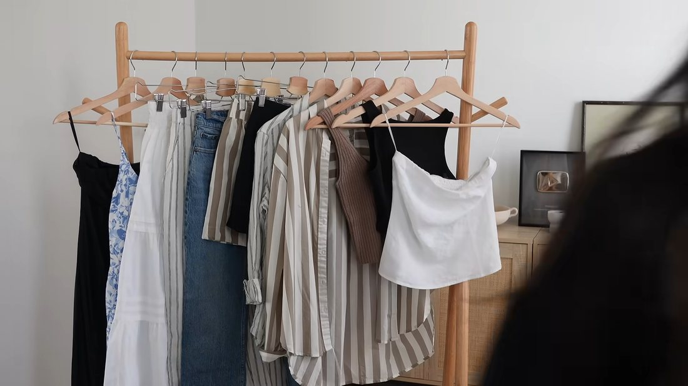
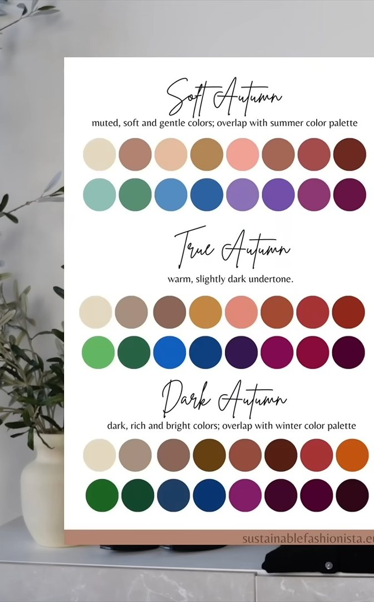
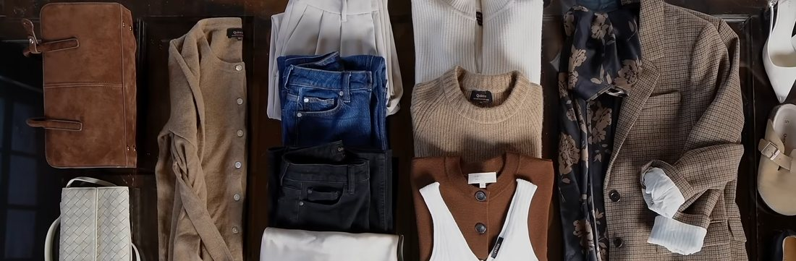
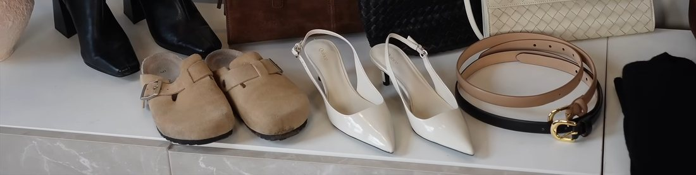
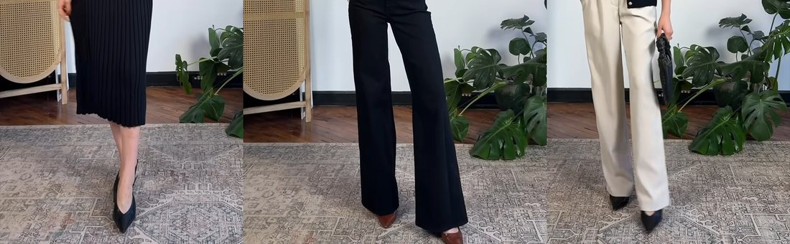
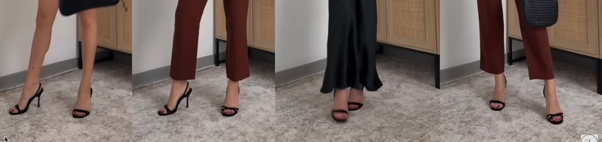

视频作者 Miss Louie 说自己做胶囊衣橱超过十年。这期她把做法拆成 6 条建议，并用一整排单品做示范。下面按可照做的顺序整理成 5 步，关键数字都带原片时间戳。

适合谁：想减少每天搭配选择、愿意先用现有单品试公式的人。视频说这套做法的核心是「最大化搭配组合，同时保持克制」00:01:17。
不适合谁：只想靠不断买新衣服获得变化的人。视频说变化来自单品之间的形状、领口、长度和质感对比，不是靠件数堆出来00:04:5300:05:25。
视频里没说：所有单品的总花费、身高体型的选码建议，以及颜色诊断的具体机构信息。只说了赞助商和「365 天退货」00:08:58。
先把数量写下来。进阶公式是 4 件上衣 + 4 件下装 + 1 件连衣裙或连体衣 + 2 件外套 + 2 双鞋00:01:33。作者说她用这个公式做出过最多约 60 套搭配00:01:28。
觉得复杂就用新手版 333：3 件上衣 + 3 件下装 + 3 双鞋。作者说这个版本鞋的玩法更多、搭配的心智负担更小，也适合旅行00:01:5800:02:0400:02:10。

第二步是「质量优于数量」。作者说胶囊里的衣服要能一季反复穿、并且年复一年继续穿00:02:1900:02:24。她春夏选 100% 欧洲亚麻、可洗真丝和 100% 棉；秋冬选羊绒、羊毛羽绒服；全年用皮革配饰00:02:3900:02:5100:02:54。
| 要决定的事 | 视频里的说法 | 照着做 |
|---|---|---|
| 用哪个数量公式 | 进阶公式 4+4+1+2+200:01:33；新手 33300:01:58 | 第一次先写 333，熟悉后再扩到进阶公式 |
| 买多还是买好 | 要能跨季反复穿，选好材料00:02:1900:02:26 | 先清点现有单品，视频说作者春季基本不用买新的00:03:07 |
| 暖调还是冷调 | 暖调偏 espresso、棕、驼、象牙白、奶油色；冷调偏灰、海军蓝、石板色、冷卡其、冷灰褐00:04:0200:04:11 | 选定一个色调后整套都用它，作者说这样上衣、下装和外套才能互相搭00:04:1800:04:42 |
| 变化从哪来 | 形状、轮廓、领口、长度、质感都要错开00:04:5900:05:25 | 上衣准备 V 领、圆领、U 领、高领；下装区分长裤、九分裤、裙子00:05:1200:05:19 |
| 一件还是多件 | 一件衣服能变多种穿法，就能增加组合数00:06:18 | 优先挑能单穿、能当外层、能换领口变化的款00:05:3700:06:26 |
| 配饰怎么定 | 包要一硬一软形成对比；鞋和包呼应同一个颜色00:07:3200:08:23 | 选两个锚点色，用鞋和包把上下装「夹」起来00:08:28 |
先决定走进阶还是新手路线，再按格子填单品。作者把进阶公式称为自己「久经考验」的方法，并说连外套、鞋都算进去00:01:2600:01:38。
新手版 333 的卖点是把鞋增加到 3 双，上衣和下装各 3 件，搭配时不用想太多，作者直接说它适合旅行00:01:5800:02:10。

视频说春夏用亚麻、可洗真丝、棉；秋冬用羊绒和羊毛羽绒服；皮革配饰全年可用00:02:3900:02:5100:02:54。作者举例说自己的白色长裙、真丝裙和亚麻套装春天直接拿出来就能穿00:03:0100:03:05。
颜色上，视频说中性色不等于只有黑白。先看冷暖：作者说血管偏绿可能偏暖，偏蓝可能偏冷，介于两者之间是中性00:03:4800:03:5300:03:57。她在韩国做过色彩诊断，自称是秋季型，偏向酒红、棕、橄榄等暖自然色00:04:2300:04:31。

真正的操作只有一条：整套只认一个色调。作者说不管你用什么理由选，都要让整个系列保持同一个 undertone，这样单品之间才容易互相搭00:04:3800:04:42。
作者说变化来自对比，不是多买。上衣可以按 V 领 / 圆领 / U 领 / 高领分开，下装按 长裤 / 九分裤 / 裙子分开，让每件都有不同作用00:05:1000:05:16。
质感也要错开：视频举例说软针织羊绒配真丝、亚麻配镂空针织，会让搭配更有层次00:05:2800:05:31。

更省事的办法是挑「一件能变领口」的款。视频说四分之一拉链毛衣拉满是高领、拉开是带翻领的 V 领00:05:4400:05:50；开衫可以全扣、敞开当外套，或把下摆折起来变 V 领，一件算三种领口00:06:0300:06:09。
视频说一件衣服能穿出几种样子，搭配组合就会变多00:06:18。举例：亚麻衬衫可以单穿，也可以敞开当轻薄外层00:06:2600:06:29。
带腰带的针织连衣裙是作者的重点示范：系紧腰带是沙漏轮廓，不系就宽松；套毛衣可当假两件半裙，外面加西装是商务休闲，里面加衬衫是叠穿00:06:3600:06:4600:06:57。
换季也按这个思路选。视频说夏天的背心可以换成针织背心，冷一点、暖一点都能穿00:07:1000:07:14。
配饰被作者称为「画龙点睛」：衣服简单时，靠对比感的包把造型拉起来00:07:2400:07:30。她一只包是硬挺的长方包，另一只是柔软、弯曲的小号编织包，两者形状相反00:07:4200:07:48。

腰带用来收紧轮廓。视频里两条皮带颜色是蘑菇色和黑色，作者说差不多 $40 一条，四季都能用00:08:0800:08:1100:08:16。
最后检查鞋和包：作者说把鞋配成你选的两个颜色之一，就是「三明治穿法」，上下用同色呼应，让眼睛觉得和谐00:08:2300:08:2800:08:35。

| 坑 | 怎么避 |
|---|---|
| 只盯黑白配 | 同一色调里还有深浅和暖冷，先定 undertone 再挑颜色00:03:3100:04:18 |
| 靠多买来制造变化 | 错开领口、长度和质感，而不是重复买同一类00:05:0700:05:25 |
| 只买一季能穿的料子 | 视频按春夏亚麻/真丝/棉、秋冬羊绒/羊毛划分00:02:3900:02:51 |
| 一件衣服只有一个穿法 | 先问能不能敞开穿、换腰带、套外层或当半裙00:06:1800:06:46 |
| 包和鞋各选各的颜色 | 让鞋与包落在同一组锚点色上，视频叫三明治穿法00:08:2300:08:30 |
| 把赞助商说法当通用事实 | $40 皮带价与 365 天退货都是视频口播，购买前自行核对00:08:0800:08:58 |
作者说进阶公式「最多做出约 60 套搭配」00:01:28。视频没有展示逐套组合，本文只记录这个说法，不替它背书。
视频用「看血管颜色判断冷暖」给出选色方向00:03:4800:03:53，并提到作者在韩国做过色彩诊断00:04:23。这是个人经验，不是可核验的通用规则，本文不下结论。
本期单品全部来自视频赞助商，视频还口播了 $40 皮带价和 365 天退货00:08:0800:08:58。价格与售后以实际页面为准。
